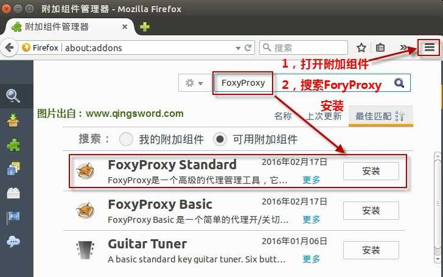
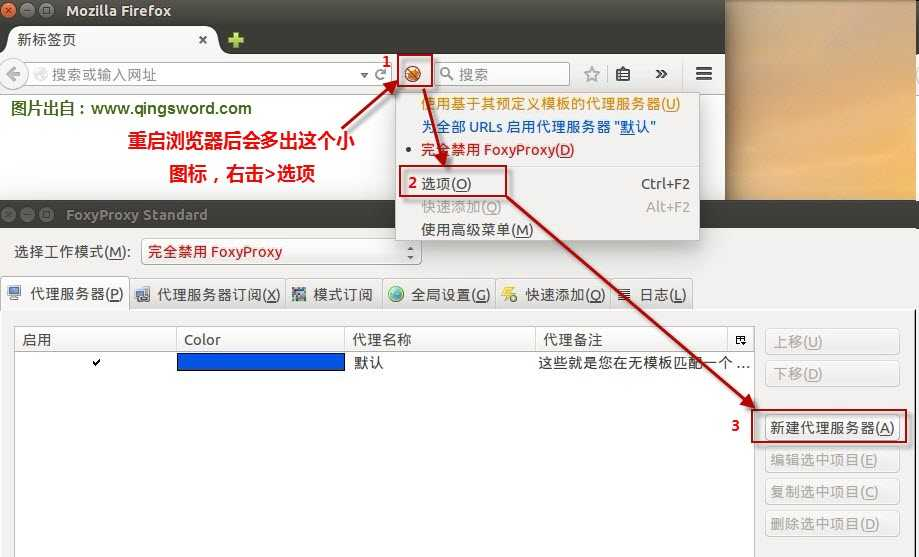
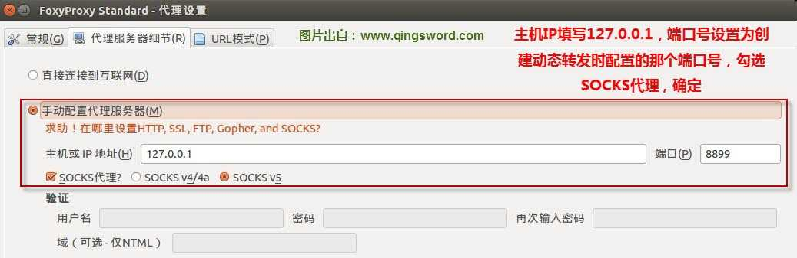
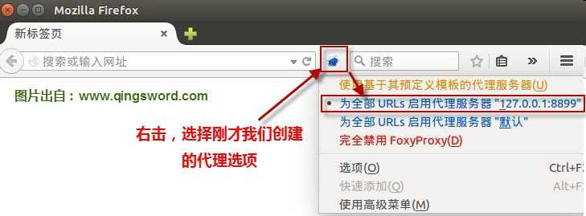

[ubuntu入门手册]-18-SSH端口转发
引言
这篇文章介绍三种SSH端口转发方式，分别是动态端口转(fan)发(qiang)，本地端口转发和远程端口转发，分别适用于不同网络环境。
文章目录
0×1.SSH动态端口转发
SSH动态端口转发工作原理介绍：
配置SSH动态端口转发，将在本地创建一个 SOCKS 代理服务端口，指向远程SSH服务器，这样就在本地和远程SSH服务器之间建立了一条SSH安全通道；在本地浏览器配置SOCKS代理指向这个本地端口，浏览器的所有访问请求将通过此端口转发给远程SSH服务器，SSH服务器接收这些请求后，代替请求者去访问这些需要浏览的页面，然后将页面数据通过已经建立的SSH安全通道返回给请求者，从而让本地能够显示这些页面内容，SSH动态端口转发能保证本地到SSH服务器的数据安全传输，但不能保证SSH服务器到实际浏览页面所在服务器之间的数据安全传输，除非它们之间也使用了加密连接。
SSH动态端口转发实例：
实验需求：
1）已经在墙外的SSH服务器
2）火狐浏览器
3）火狐插件"FoxyProxy Standard"
#1.打开终端，配置去往SSH服务器的SOCKS代理端口 #-D代表这是一个SOCKS代理端口，本地端口号8899 #qing是远程SSH服务器中的用户，192.168.1.233是SSH服务器的IP地址 #参数解释： #-f 后台执行命令 （可选） #-N 不执行远程命令 （可选） #-q 安静模式，不显示警告和诊断信息（可选） #-T 禁用伪tty分配（可选） #-n 如果添加了-f最好使用这个参数 qing@qingsword:~$ ssh -qTfnN -D 8899 qing@192.168.1.233 #2.输入SSH服务器上qing用户对应的密码，SSH连接完成，此时已经在本地和SSH服务器之间开启了一条数据转发通道。
打开火狐浏览器，搜索插件并安装"FoxyProxy Standard"；
安装后，添加一条配置，使用刚才创建的SOCKS端口；
  这样就配置好了一个随时可用的转(fan)发(qiang)环境，不需要使用时只要选择"完全禁用FoxyProxy"，再结束后台的ssh连接即可。
0×2.SSH本地端口转发
假设有三台计算机A（192.168.1.100）、B（192.168.1.101）、C（192.168.1.102），A作为客户端，C是服务端，A想要SSH连接C，必须先SSH连接到B，通过B才能SSH连接到C，但每次这样操作十分麻烦，这时就可以在B上配置SSH本地端口转发，让B的指定端口的数据直接发给C，之后，A只需要SSH连接B的这个指定端口，就能直接连接到C，请看下面的演示：
#1.在B上配置SSH本地端口转发 #-L参数指定这是一条本地SSH转发，其后的命令格式 #[本地端口]:[SSH服务器IP]:[SSH服务器上开启的SSH服务端口号] #qing@192.168.1.102，SSH服务器IP和用来连接的用户名 # -g参数允许远程主机连接到本地的这个转发端口，不配置远程主机无法连接，只能本地连接 qingB@B.qingsword.com:~$ ssh -gNnf -L 23333:192.168.1.102:22 qingC@192.168.1.102 #首次连接会接收一个Key，输入yes，随后输入SSH服务器上对应用户名的密码即可完成连接 #2.在A上连接B的23333端口（IP虽然是B的，但@前面的用户名要是C中的用户，想登陆C中哪个账户的SSH，就写上对应的用户名，输入的连接密码也应该是C中对应账户的密码） qingA@A.qingsword.com:~$ ssh -p 23333 qingC@192.168.1.101 #注意：如果开启了iptables等防火墙，请将对23333入站连接设置成允许，否则很有可能连接失败
这种方法可以用来将数据转发到指定的任意端口，而不局限于22号端口。
0×3.SSH远程端口转发
假设有两台计算机A（192.168.1.100）、B（10.10.10.10），A是内网计算机，B是外网计算机，B不能直接访问A，但A能直接访问B，此时可以通过在A上安装openssh-server服务，使用远程端口转发，将本地的指定端口映射到B的指定端口，从而使得访问B上的这个端口就能直接访问A上的指定端口，请看下面的演示：
#1.A和B都需要安装openssh-server qing@qingsword.com:~$ sudo apt-get install openssh-server #2.在A上执行远程端口转发 #-R开启远程端口转发 #[远程开启端口]:本地主机IP:[本地主机端口] #qingB@10.10.10.10，使用qingB这个账户连接B qingA@A.qingsword.com:~$ ssh -fNn -R 22222:localhost:22 qingB@10.10.10.10 #3.连接完成后，在B上将会开启22222号端口，B可以使用自己的这个端口访问到A的22号端口(虽然是访问的localhost，但是@前的登陆用户名应该是A的用户，因为访问B的22222就等于访问A的22) qingB@B.qingsword.com:~$ ssh -p 22222 qingA@localhost #4.如果想让其他计算机可以通过B的22222号端口访问A，还需要在B上再添加一条本地转发，指定一个对外开放的端口（例如23333），将访问此端口的数据转发给自己的22222号端口 qingB@B.qingsword.com:~$ ssh -gNnf -L 23333:localhost:22222 qingB@localhost #5.此时在第三台计算机上，只需要访问B的23333号端口即可连上A的22号端口（访问B的23333号端口就等于访问B的22222号端口，而此端口又将数据转发给A的22号端口，所以@前面要用A的账户名） qingC@C.qingsword.com:~$ ssh -p 23333 qingA@10.10.10.10
0×4.SSH转发实现内网穿透
这一部分用上面的端口转发技术做两个小的脚本，实现通过外网某台服务器，控制内网的ubuntu机器，功能描述：
C/S架构
内网机器C是被控端，外网机器S是服务端，
两台机器都需要安装（Openssh-server服务）并且允许root用户远程登录
实现通过外网机器的指定端口，连接到内网机器的ssh（专[zhuang]业[bi]点叫内网穿透？）
必要软件安装：
Ubuntu安装openssh的命令（注：能够ssh连接上的机器已经安装了这个服务不需要重复安装）
#1.C和S都需要安装openssh-server qing@qingsword.com:~$ sudo apt install openssh-server #2.两台机器都需要允许root用户远程登录，使用vim qing@qingsword.com:~$ vim /etc/ssh/sshd_config 找到PermitRootLogin去掉注释，修改成 PermitRootLogin yes #3.保存之后，重启ssh服务 qing@qingsword.com:~$ sudo systemctl restart ssh #4.两台机器都需要安装脚本执行需要的组件，执行下面的命令 qing@qingsword.com:~$ sudo apt install expect
使用方法：
将下面的代码，保存成c.sh放在被控制的内网机器上：
#!/bin/bash
if [ -z "$1" ] && [ -z "$2" ] ; then
echo "Server Address or Password can not be empty!"
echo "For Example:"
echo "bash c.sh 233.233.233.233 password123"
echo "Please try again."
else
/usr/bin/expect <<-EOF
spawn ssh -fNn -R 23333:localhost:22 root@$1
expect {
"*yes/no" { send "yes\r"; exp_continue }
"*password:" { send "$2\r" }
}
expect {
"*password:" { send "$2\r" }
}
expect eof
EOF
fi
将下面的代码，保存成s.sh放在外网机器上：
#!/bin/bash
if [ -z "$1" ] && [ -z "$2" ] ; then
echo "Server Port and Password can not be empty!"
echo "For Example:"
echo "bash s.sh 30022 password123"
echo "Please try again."
else
/usr/bin/expect <<-EOF
spawn ssh -gNnf -L $1:localhost:23333 root@localhost
expect {
"*yes/no" { send "yes\n"; exp_continue }
"*password:" { send "$2\r" }
}
expect {
"*password:" { send "$2\r" }
}
expect eof
EOF
fi
首先在内网机器c.sh目录下执行：
# bash c.sh <外网服务器IP> <外网服务器root密码> # 例如： qing@qingsword.com:~$ bash c.sh 200.10.231.22 pass1234
等上面的命令执行完之后，在外网服务器s.sh目录下执行：
# bash s.sh <提供外网链接用的端口号> <外网服务器root密码> # 例如： qing@qingsword.com:~$ bash s.sh 30022 pass1234
注：<提供外网链接用的端口号>不要设置成23333，这个端口是服务器和客户端通讯用的。
最后，在任何可以链接互联网的linux机器上：
# ssh <外网服务器IP> -p <提供外网链接用的端口号> # 例如： qing@qingsword.com:~$ ssh 200.10.231.22 -p 30022
就可以连接到内网机器的22端口了。